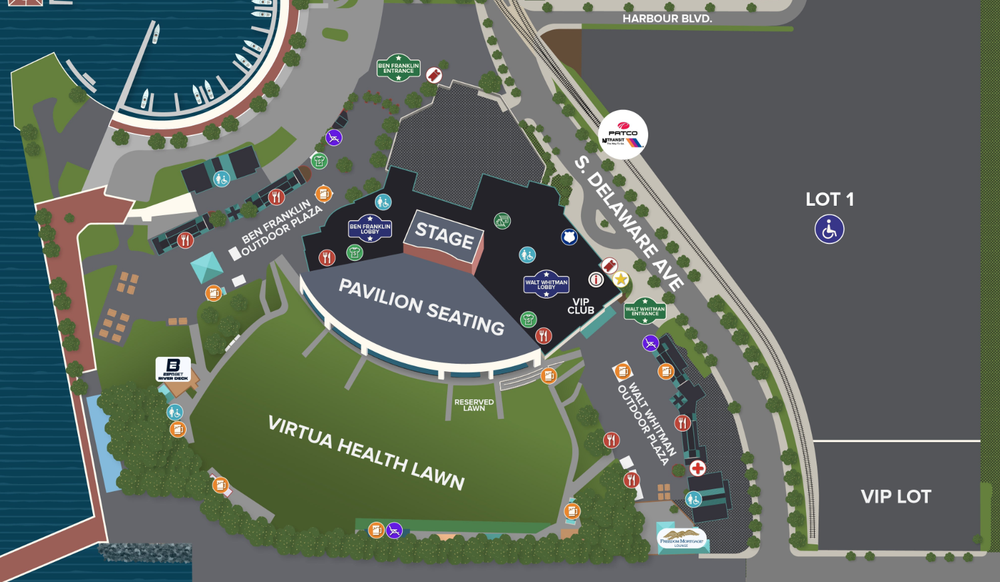

The CSV contains 151 records and five generic VIP positions. The dashboard totals 152 with six VIP positions. A one-row difference is visible; it does not prove which record is missing.
The CSV does not support assigning those rows to Ben Franklin or Walt Whitman. Both the unresolved group and the dashboard’s separate zone totals remain visible.
03
Camera identity changed between sources
The dashboard says URSA Mini Pro 4.6K G2. The current rig guide covers URSA Broadcast G2. Use the current guide for model learning and check the body badge for installed identity.
The front record says encoder. A blurry rear-panel reading suggests HDMI OUT. Keep the path provisional until the exact model and connections are read.
Curved delay-wall arrangement follows the supplied correction. Equal drawn radius is schematic; it does not establish measured distance or delay timing. Winter operation still needs venue confirmation.
Processor allocation
Uploaded record
Four NovaStar VX4S assignments
Processor label
Serves
Input 2
Stage Right
SR · 10 mm
DVI
Stage Left
SL · 10 mm
SDI
Lawn 1/2
D1 + D2 · 7 mm
DVI
Lawn 3/4
D3 + D4 · 7 mm
HDMI
The record lists SDI input 1 and 1080i at 60 Hz across all four. Confirm the running standard and labels at the rack.
What the drawing cannot establish
Brightness values in the upload are historical readings, not current setpoints. Read each controller before changing output.
Keep controller and receiving-card configuration backups before a swap. Follow the current vendor procedure and the department’s approved configuration.
The lawn and flanking walls use different pitches. Agree the incoming format and which feed is used during the advance.
151 imported records. Every row retains its paper-only or unidentified confidence; none is promoted to field verified.
59Videri Spark
58Samsung OH
34Legacy
37Lobby unresolved
Enable JavaScript to filter the inventory. The CSV download is available above.
Imported display records; select a row for source notes
Position
Space / map key
Technology / model
Evidence
Flag
Compare the CSV with the dashboard’s zone claims
Two source inventories; figures are not reconciled
Zone
CSV rows
Dashboard claim
Ben Franklin Plaza
34
34
Walt Whitman Plaza
44
44
Ben Franklin Lobby
8
21
Walt Whitman Lobby
9
33
Lobby unresolved
37
Not separated
Lawn
14
14
VIP
5
6
Total
151
152
The CSV’s 151 “Unknown” winter-status fields remain unknown. Dashboard winterization notes are a separate claim, not a per-display verification.
04 / Equipment reference
The rack, with its gaps intact.
31 entries across four groups in dashboard v2.0. Entries can represent paired units; this is not a chassis count. Group order and heights are illustrative.
The source’s “OK” has been relabeled “Recorded”: it describes historical documentation, not present signal health. Unrecorded space is not confirmed spare capacity.
The supplied visitor map gives venue context. Zone buttons open inventory records; they do not mark individual equipment locations.

Supplied site-plan.png · visitor layout. Unresolved lobby records have no assigned zone. Camera assignments remain in Camera operations.
06 / Sources & references
Know what each source proves.
Uploaded operations record
The dashboard v2.0 source contributes the bowl schematic, four rack groups and zone claims. Its observations date to Aug 30–Sep 1, 2026. Screenshots establish prior UI states; they do not prove current rack behavior.
The CSV contributes 151 row-level records, including unresolved placement, confidence and defect flags. The visitor map supplies geographical context.
The older standalone HTML and print view were compared as supporting versions. Their counts and model labels do not silently override newer evidence.
Public reference fields exclude contacts, IP/MAC addresses, hostnames and serial numbers. Current operational records remain in their existing protected workflow.
Two physical SDI aux outputs plus a routable USB webcam destination; a valid 58-channel Fairlight count; a local ND wheel on the G2; four simultaneous panel control channels with reassignment. The reference pages explain these distinctions.
{kind=link}